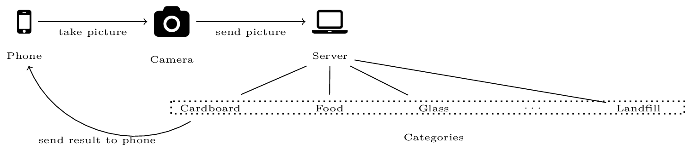

\documentclass{standalone}
\usepackage{tikz}
\usetikzlibrary{calc, chains,positioning}
\usepackage{fontawesome}
\begin{document}
\begin{tikzpicture}[
start chain = going right,
bin/.style={
%draw,
% text width=6mm,
inner sep=5pt,
%fill=blue!20,
on chain
}
]
% Move label below icon
\node[] (mob) {\LARGE{\faMobilePhone}};
\node[right = 2cm of mob] (cam) {\LARGE{\faCamera}};
\node[right = 2cm of cam] (lap) {\LARGE \faLaptop};
\node[below = 0.1 cm of mob] (moblabel) {\tiny{Phone}};
\node[below = 0.1 cm of cam] (camlabel) {\tiny{Camera}};
\node[below = 0.1 cm of lap] (laplabel) {\tiny{Server}};
\node[bin,below left=of lap] (c1) {\tiny{Cardboard}};
\node[bin] (c2) {\tiny{Food}};
\node[bin] (c3) {\tiny{Glass}};
\node[bin] (c4) {\tiny{$\cdots$}};
\node[bin] (c5) {\tiny{Landfill}};
\path[every node/.style={font=\sffamily\small}]
(laplabel) edge node[right] {} (c1)
(laplabel) edge node[left] {} (c2)
(laplabel) edge node[] {} (c3)
(laplabel) edge node[] {} (c5);
\node[below = 0.1 cm of c3] (label) {\tiny{Categories}};
% \draw[thick] (c3) -> (moblabel);
\path[->] (c1) edge [bend left=50, below] node {\tiny{send result to phone}} (moblabel);
\path[->] (mob) edge [below] node {\tiny{take picture}} (cam);
\path[->] (cam) edge [below] node {\tiny{send picture}} (lap);
\draw[thick,dotted] ($(c1.north west)+(0.025,-0.125)$) rectangle ($(c5.north east)+(0.25,-0.35)$);
\end{tikzpicture}
\end{document}Created by David Li